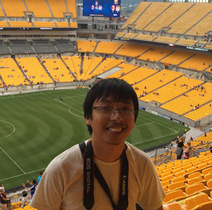
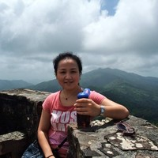
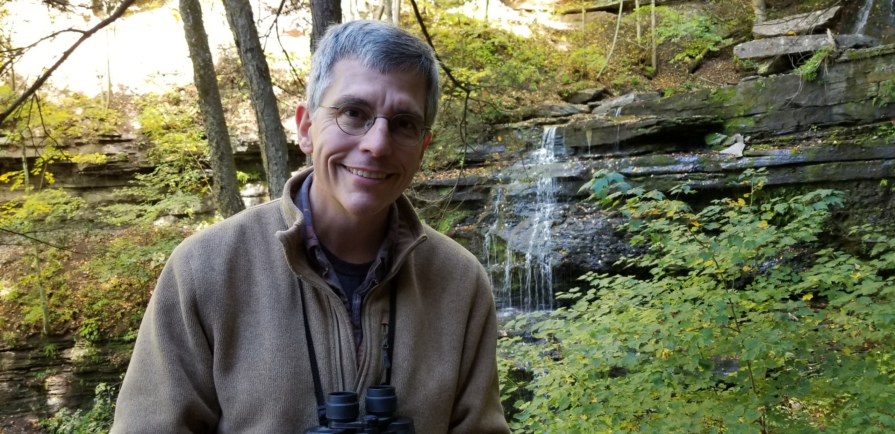
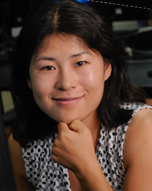
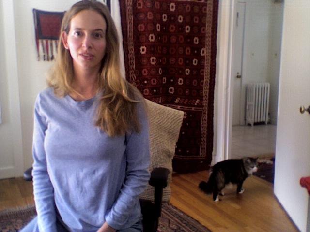

Alumni
Zahra Rahimi
Intelligent Systems
PhD 2019: Dissertation
Now at Pandora

Fan Zhang
Computer Science
PhD 2017: Dissertation
Now at Google
Wencan Luo
Computer Science
PhD 2017: Dissertation
Now at Google
Huy Nguyen
Computer Science
PhD 2017: Dissertation
Now at AppZen

Wenting Xiong
Computer Science
PhD 2015: Dissertation
Now at Facebook
Michael Lipschultz
Computer Science
PhD 2015: Dissertation
Now at Naval Air Systems Command

Arthur Ward
Intelligent Systems
PhD 2010: Dissertation

Min Chi
Intelligent Systems
PhD 2009: Dissertation
Now Associate Professor,
North Carolina State University
Hua Ai
Intelligent Systems
PhD 2009: Dissertation
Now Manager Data Science, Delta Airlines
Mihai Rotaru
Computer Science
PhD 2008: Dissertation
Now Head of R&D, Textkernel

Dr. Kate Forbes-Riley
LRDC
Now novelist
Dr. Joel Tetreault
LRDC
Now Senior Director of Research, DataMinr
Dr. Carrie Demmans Epp
LRDC and CIDDE
Now Assistant Professor, University of Alberta
Dr. Yao Xiong
LRDC and CIDDE
Now at Pearson